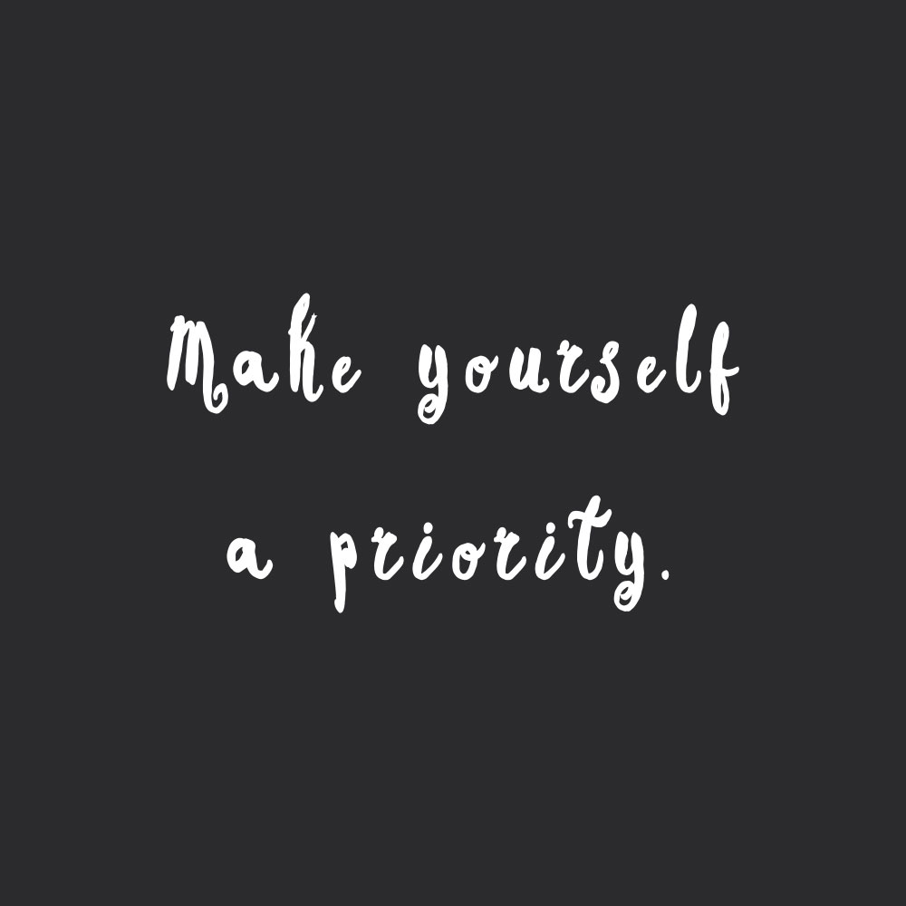

Interactive Tableau Visualization
Below is a live, interactive Tableau graph you can explore — hover and click to filter the data.

Created from scratch using HTML and CSS — a peek into what keeps me balanced.
Jump to Tableau Graph ↓Welcome! This page explores the routines, goals, and activities that help me stay balanced and motivated as a student. It includes lists, an image, an embedded video, an on-page anchor, and a live Tableau graph — all built from scratch without any Bootstrap.

A reminder to take care of yourself every single day.
A video that inspires me to stay motivated and present.
Below is a live, interactive Tableau graph you can explore — hover and click to filter the data.